業者入稿用のデザイン指示書兼レイアウト設計図です。

| アイテム | ロングスリーブTシャツ（袖口リブあり推奨） |
|---|---|
| ボディカラー | ブラック |
| プリント箇所 | フロント（胸中央）＋右袖の2か所 |
| 加工方法 | イラスト部がフルカラーのため、フルカラー加工（DTF／インクジェット、白下地あり） イラストを白1色にする場合は、シルクスクリーン白1色でも可。 |
| 版面サイズ | 横 280 × 縦 350mm、身頃の左右中央に配置。襟リブ下 約80mm から開始。 |
|---|---|
| ① イラスト | 横 240 × 縦 185mm（版面上部）。青道着の小西さん（左側・右向き）と黒道着の相手選手（右側・左向き）が対峙して構え合うイラスト。 小西さんのポーズは参考写真を使います：左足を前に出し、腰を落として両手を顔の前に構えた姿勢。写真は別送です。 |
| ② ネーム・所属 | MASAHIRO KONISHI OVER LIMIT BJJ ＋ 白帯アイコン（イラスト下部中央に重ねる） 書体：Anton（名前）／Oswald SemiBold（所属）。色は白。 |
| ③ タイトル | THE SHITSUKOI ［電源OFFアイコン］ SWITCH HANDLER 書体：Anton。色は白。📴の絵文字は印刷できないため、電源OFFの携帯アイコンとしてベクター化済みです。 |
| ④ メッセージ | HE IS AN OUTSTANDING LAWYER BECAUSE HE COMMITS TO RESULTS MORE PERSISTENTLY THAN ANY OTHER. 書体：Oswald SemiBold（Futura Bold／Helvetica Bold の代替、Impact 系）。色は白。中央揃え。 |
| 位置 | 着用者の右腕の外側、前腕〜上腕。正面から見ると向かって左の袖です。 |
|---|---|
| 版面サイズ | 横 80 × 縦 420mm（袖に沿って縦長に配置） 袖にプリントできる範囲は業者とボディによって違います。縮小が必要なら縦横比を保って縮小してください。 |
| 向き | 手首側から肩に向かって読める向き（文字列を反時計回りに90°回転）。2行並び。 |
| テキスト | SILENCE SWITCH: GRAB HERE STRONGLY ここを強く掴むと黙ります 書体：Anton（英字）／Noto Sans JP Black（和文）。白1色。 |
PNG はすべて原寸・300dpi・背景透過です。SVG を編集する場合は Anton、Oswald、Noto Sans JP（いずれも Google Fonts、商用可）を入れてから開き、入稿前にアウトライン化してください。イラストが完成したら、front_print_300dpi.png の上部 240×185mm の枠内に重ねて1枚にまとめます。
【ロンT プリント発注内容】 ■ボディ：ロングスリーブTシャツ（袖口リブあり）／ブラック ■プリント①：フロント胸中央 280×350mm フルカラー（白下地あり） データ：front_print_300dpi.png（原寸・300dpi・透過） ※上部 240×185mm にイラストを配置（イラストは別途入稿／作成依頼） ■プリント②：右袖（着用者の右腕・外側） 80×420mm 白1色 データ：sleeve_300dpi.png（原寸・300dpi・透過） 向き：手首側から肩に向かって読める向き ■備考：袖のプリント範囲の上限が 80×420mm 未満の場合は、縦横比を保ったまま縮小してください。
{kind=link}
{kind=link}
{kind=link}
{kind=link}
{kind=link}